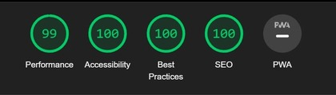
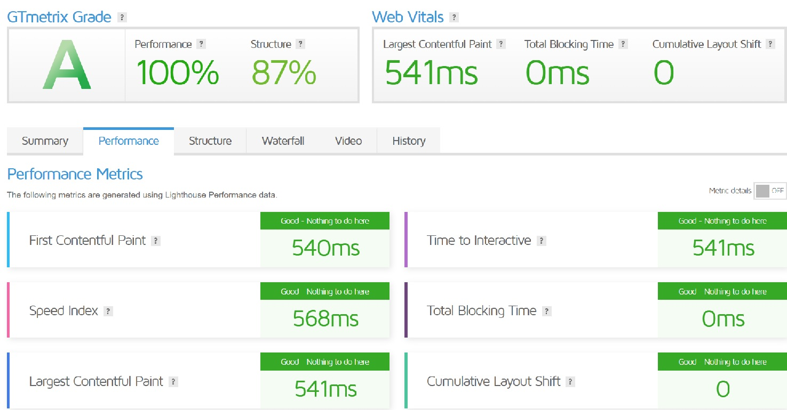
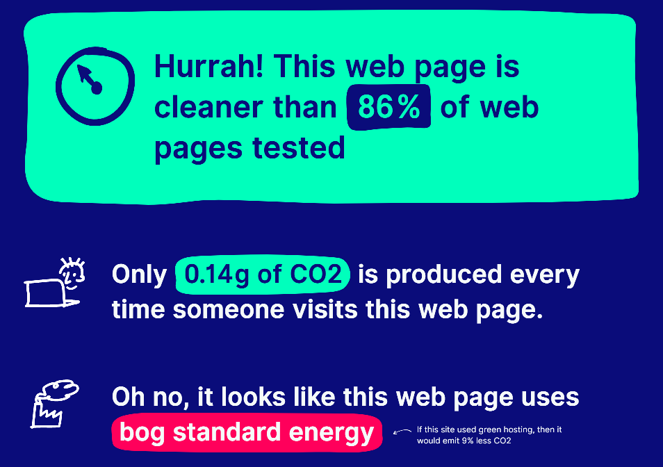

Introduction
Afin d'inscrire notre blog dans une démarche d'éco-conception, nous avons décidé de nous intéresser à l'impact environnemental qu'il peut avoir. Nous avons donc effectuer différentes analyses afin d'accroitre au maximum les performances de notre site et de réduire son impact.
Mise en page
Tout d'abord, pour des questions d'ergonomie, nous avons utiliser une mise en page simple et claire. Nous avons également choisi d'utiliser une police de caractère lisible et agréable à lire. Enfin, nous avons choisi de mettre en avant les articles les plus récents afin de les rendre plus accessibles. Nous avons choisi des couleurs contrastées afin de rendre notre site plus agréable à l'oeil et plus accessible par tout le monde. Toutes ces démarches permettent de rendre notre site plus facile à naviguer et ainsi éviter de se rendre sur des pages sur lesquelles l'utilisateur ne souhaitait pas aller, et donc réduire l'impact de notre site.
Accessibilité
En utilisant Lighthouse, nous avons pu analyser l'accessibilité de notre site. Nous avons obtenu un score de 70% à cause de certains oublis comme le fait de ne pas avoir mis de texte alternatif à nos images. Nous avons donc corrigé ces erreurs afin d'augmenter notre score d'accessibilité. Après avoir corriger ces erreurs, nous avons obtenu un score de 100%.Performances
Toujours en utilisant Lighthouse, nous avons pu analyser les
performances de notre site et nous avons pu observer 99% de
performances.

Nous avons également pu observer des résultats similaires avec
GTMetrix

Avec WebsiteCarbon, nous avons pu observer que notre site a un
impact environnemental relativement faible, ce qui est très
positif.

En effet, pour améliorer les performances de notre site, nous
avons optimisé les images afin de réduire leur poids en réduisant
leurs résolutions et en les compressant. Nous avons également pris
la décision de convertir nos images en format webp afin de réduire
leur poids.
Nous avons également minifier notre css afin de réduire son poids
et ainsi réduire le temps de chargement de notre site. De plus,
cette réduction de poids permet de réduire l'utilisation de la
bande passante et donc de réduire l'impact environnemental de
notre site.
Conclusion
Nous avons donc pu observer que notre site a un impact environnemental relativement faible grâce aux différentes optimisations que nous avons effectuées.